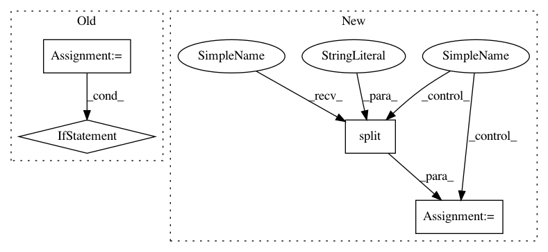

5798262e2f9d254f37cbe762f89747b7049a8acc,measurements/crinacle/crinacle_crawler.py,CrinacleCrawler,process,#CrinacleCrawler#,107
Before Change
fr = FrequencyResponse(name=item.true_name)
fr.raw = np.zeros(fr.frequency.shape)
for fp in file_paths:
if re.search(r"\.mdat$", fp):
// Read mdat file for Gras headphone measurements
raise TypeError("Crinacle\"s Gras measurements are not supported yet!")
else:
// Read text file for IEM and Ears-711 headphone measurements
with open(fp, "r", encoding="utf-8") as fh:
s = fh.read()
freq = []
raw = []
for line in s.split("\n"):
if len(line) == 0 or line[0] == "*":
After Change
print(f"C-weighted measurement: {item.false_name}")
continue
frp = line.split(", ")
if len(frp) == 1:
frp = line.split("\t")
if len(frp) == 1:
frp = line.split(" ")
In pattern: SUPERPATTERN
Frequency: 3
Non-data size: 4
Instances
Project Name: jaakkopasanen/AutoEq
Commit Name: 5798262e2f9d254f37cbe762f89747b7049a8acc
Time: 2020-10-18
Author: jaakko.o.pasanen@gmail.com
File Name: measurements/crinacle/crinacle_crawler.py
Class Name: CrinacleCrawler
Method Name: process
Project Name: YerevaNN/mimic3-benchmarks
Commit Name: 7567cc646d258e40dde9790a28a9b264ccd494fb
Time: 2017-08-27
Author: harhro@gmail.com
File Name: mimic3models/split_train_val.py
Class Name:
Method Name:
Project Name: YerevaNN/mimic3-benchmarks
Commit Name: 5d353701dd56a1fc8abc15e4082e33b7bed2a241
Time: 2017-08-09
Author: harhro@gmail.com
File Name: mimic3models/split_train_val.py
Class Name:
Method Name: